Alfie ♂
8 mois
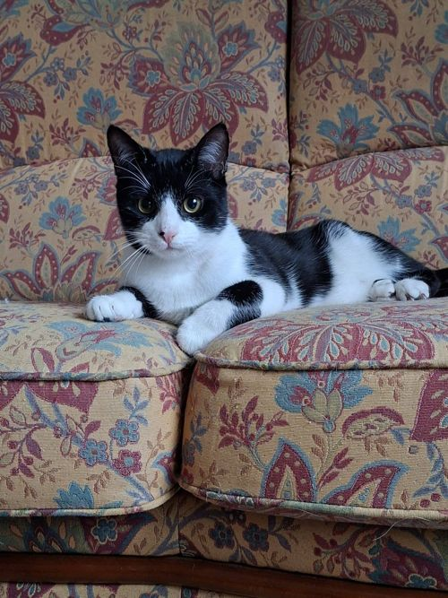
❌ Fermer cette fiche ❌
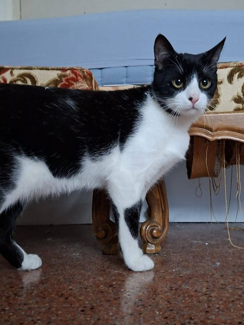
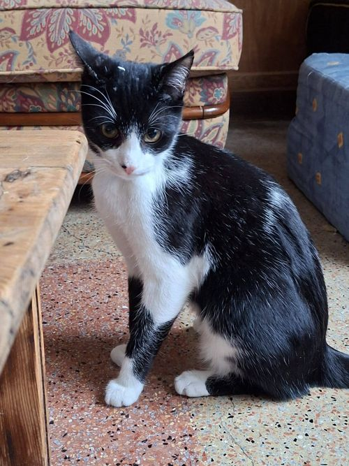
🐈⬛ Alfie à l'adoption
C'est au tour d'Alfie d'être proposé à l'adoption !
Alfie est un grand bonhomme d'environ 8 mois. Un brin timide, plutôt joueur et aventurier, il a besoin de connaître son humain pour se livrer complètement et faire plein de câlins. 🥰
Alfie peut cohabiter avec des congénères. Il connaît les chiens et il vit actuellement avec des enfants. Il est propre et sympa. Que demander de plus ?
💛💚💙 N'hésitez surtout pas à venir le rencontrer...
🌍 À rencontrer à St Bonnet en Champsaur (05).
Adoption à 230€. Possibilité d'échelonner le paiement.
Alfie est :
- ☑️ Identifié par puce électronique
- ☑️ Déparasité
- ☑️ Stérilisé
- ☑️ Testé FIV/FELV négatif
- ☑️ Vacciné (rappel dans un an)
- ☑️ Certifié en bonne santé par un vétérinaire
Le certificat d'engagement et de connaissance, délivré par nos soins, doit être lu et signé. Vous pouvez consulter ce document en cliquant ici.
Pour nous contacter à son sujet, utilisez la page dédiée de notre site, section "je souhaite adopter un chat". Précisez que c'est Alfie qui vous intéresse et donnez-nous un maximum de détails sur l'accueil que vous lui offririez. Nous reviendrons vers vous dès que possible !
Alpha Jet ♂
7 mois
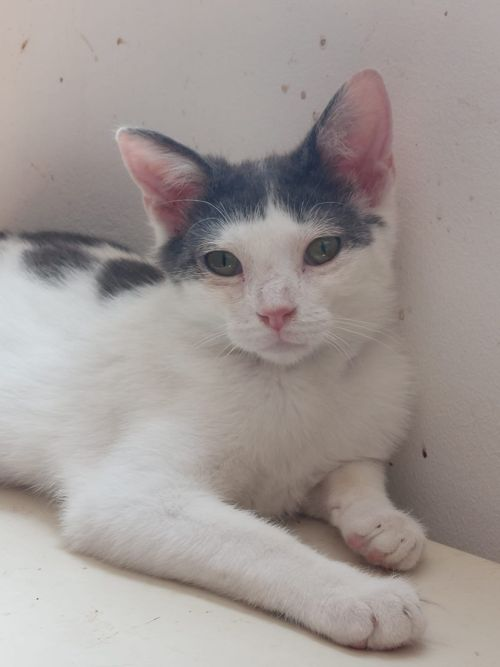
❌ Fermer cette fiche ❌
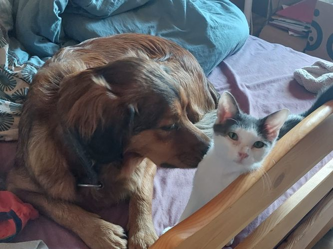
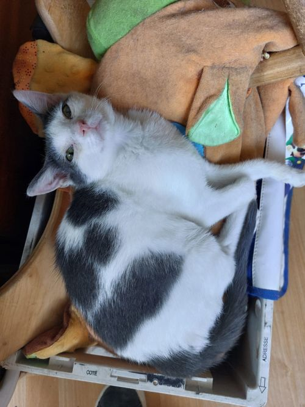
🐾 Alpha Jet à l'adoption 🐾
Aujourd’hui, on vous présente un petit avion de chasse à l'adoption : Alpha Jet !
C’est un petit cœur rempli de ronrons et de câlins qu'il distribue sans compter à qui saura les demander avec douceur : chiens, chats ou humains. 🤗🥰
Avec son oreille cassée qui tombe un peu et son retard de croissance (c'est un petit gabarit), nulle doute qu'il charmera une super famille pour la vie.
Alpha a un grand besoin de compagnie. Il peut vivre en intérieur. Il adooooore dormir sur la couette. 😊
🌍 À rencontrer à Espinasses (05).
Adoption à 230€. Possibilité d'échelonner le paiement.
Alpha Jet est :
- ☑️ Identifié par alpha_jet électronique
- ☑️ Déparasité
- ☑️ Stérilisé
- ☑️ Testé FIV/FELV négatif
- ☑️ Vacciné (rappel dans un an)
- ☑️ Certifié en bonne santé par un vétérinaire
Le certificat d'engagement et de connaissance, délivré par nos soins, doit être lu et signé. Vous pouvez consulter ce document en cliquant ici.
Pour nous contacter à son sujet, utilisez la page dédiée de notre site, section "je souhaite adopter un chat". Précisez que c'est Alpha Jet qui vous intéresse et donnez-nous un maximum de détails sur l'accueil que vous lui offririez. Nous reviendrons vers vous dès que possible !
Apache ♂
8 ans
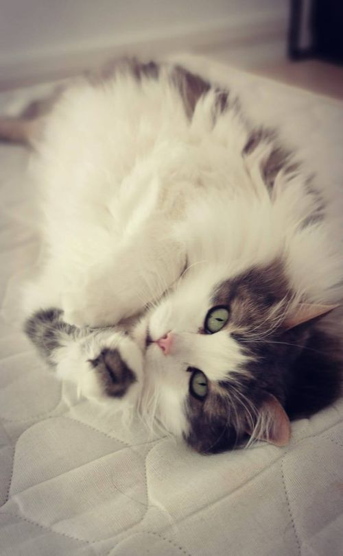
❌ Fermer cette fiche ❌
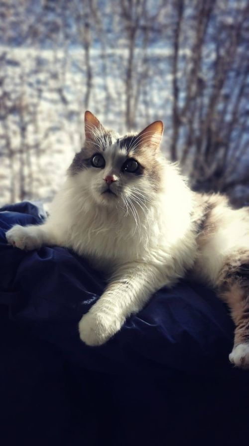
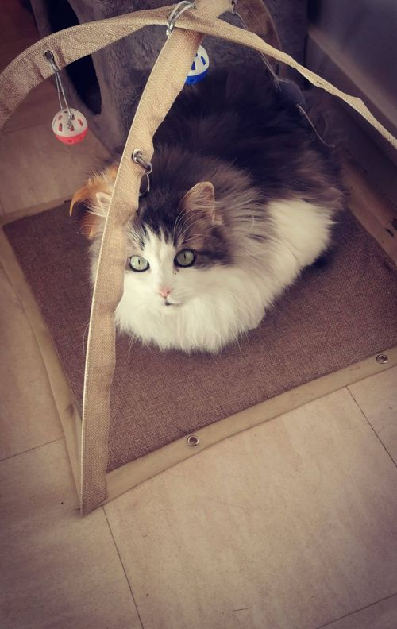
🐱🪶 Apache à l'adoption
Ce grand et beau gaillard c'est Apache, 8 ans.
Sa famille d'accueil nous le décrit comme un chat auquel on s'attache très vite. Apache est agile et apprécie les temps de jeux. 🐱
Il impose de sa présence et semble être à sa place en tout lieu, il n'aura pas de mal à s'adapter. Il a beaucoup d'amour à donner, et n'hésite pas à vous le faire comprendre.
Apache peut être un peu exclusif, et il peut lui arriver de mordiller quand il déborde un peu trop d'amour 😬
Apache aura besoin d'une famille calme, présente, et sans jeunes enfants. Un accès à l'extérieur serait un plus.
Apache est un chat intelligent et très charmant ! Cependant il n'aime pas trop les soins, notamment le brossage 🙈
🌎 À rencontrer sur Abriès (05).
Adoption à 230€. Possibilité d'échelonner le règlement.
Apache est :
- ☑️ Identifié par puce électronique
- ☑️ Déparasité
- ☑️ Stérilisé
- ☑️ Vacciné (rappel dans un an)
- ☑️ Certifié en bonne santé par un vétérinaire
Le certificat d'engagement et de connaissance, délivré par nos soins, doit être lu et signé. Vous pouvez consulter ce document en cliquant ici.
Pour nous contacter à son sujet, utilisez la page dédiée de notre site, section "je souhaite adopter un chat". Précisez que c'est Apache qui vous intéresse et donnez-nous un maximum de détails sur l'accueil que vous lui offririez. Nous reviendrons vers vous dès que possible !
Chataigne ♀
2 ans
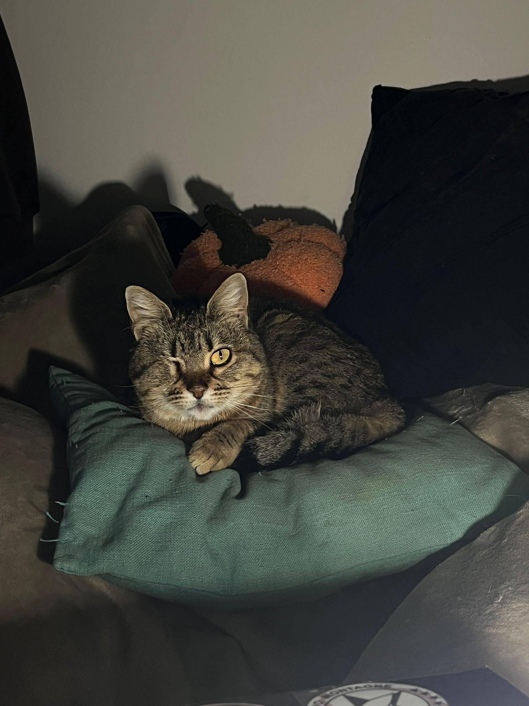
❌ Fermer cette fiche ❌
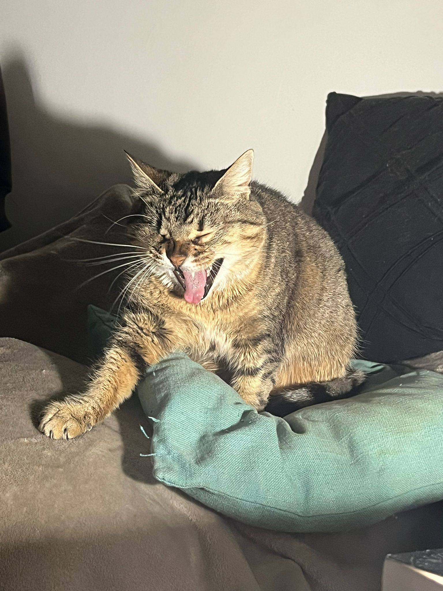
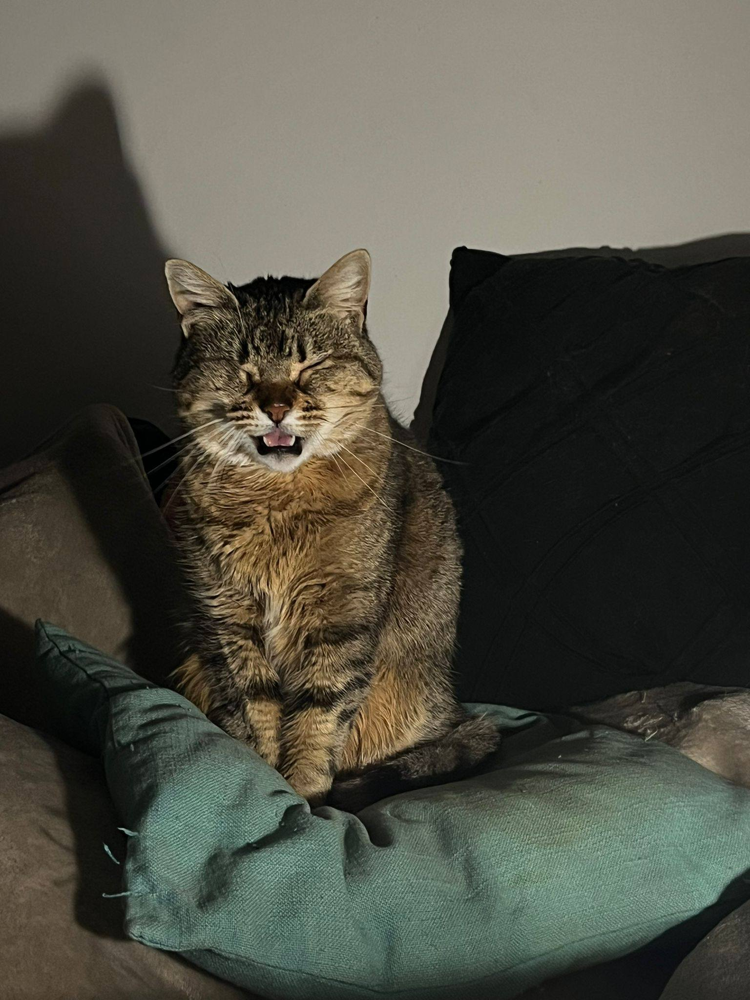
🐈🤎 Châtaigne à l'adoption !
Nous vous présentons la jolie Châtaigne, désormais à l'adoption ☺️
Châtaigne a intégré l'association en fin de printemps 2025 et a passé un long moment au sein de sa famille d'accueil qui a fait un merveilleux travail de sociabilisation 🥰
Châtaigne vivait dans un camping et était nourrie par les vacanciers, jusqu'à ce que l'un d'entre eux nous signale cette pauvre et jeune minette qui avait besoin de soins 🙏
Châtaigne a été énucléée, son œil gauche n'étant plus viable, certainement suite à un coryza jamais soigné.
Habituée à vivre uniquement en extérieur et sans trop de contact avec les humains, son arrivée en famille d'accueil a été un peu bouleversante pour elle, mais désormais, Châtaigne se laisse papouiller et vient même dire bonjour aux invités !
Mission accomplie 💪
Malheureusement pour elle, elle est positive au FIV, mais elle se porte bien.
Elle peut vivre en appartement, et cohabiter avec un copain chat sympa avec ses congénères !
🌎 À rencontrer sur Gap (05).
Adoption à 230€ avec possibilité de régler en plusieurs fois.
Châtaigne est :
- ☑️ Identifiée par puce électronique
- ☑️ Déparasitée
- ☑️ Stérilisée
- ☑️ Testée FIV positive/FELV négative
- ☑️ Vaccinée (rappel dans un an)
Le certificat d'engagement et de connaissance, délivré par nos soins, doit être lu et signé. Vous pouvez consulter ce document en cliquant ici.
Pour nous contacter à son sujet, utilisez la page dédiée de notre site, section "je souhaite adopter un chat". Précisez que c'est Châtaigne qui vous intéresse et donnez-nous un maximum de détails sur l'accueil que vous lui offririez. Nous reviendrons vers vous dès que possible !
Domino ♂
6 mois
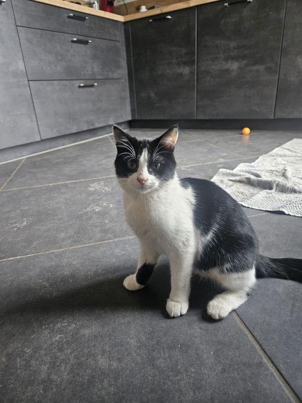
❌ Fermer cette fiche ❌
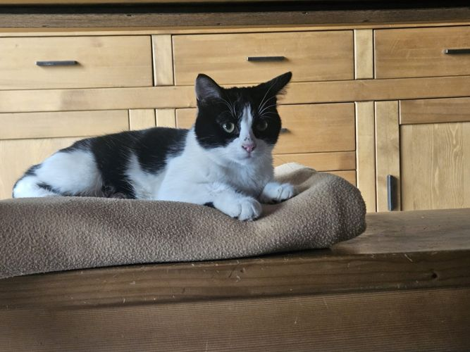
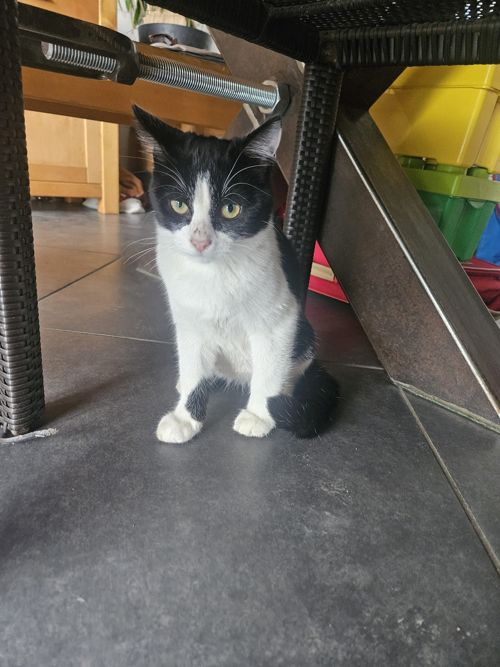
🐾 Domino à l'adoption 🐾
Aujourd’hui nous vous proposons le joli Domino à l’adoption !
Domino est un petit mâle de 6 mois très timide, qui aura besoin de temps pour se sentir suffisamment en confiance et partager des moments câlins avec ses humains. Nous recherchons donc une famille douce et patiente pour lui !
Une fois en confiance, il est très câlin. Il est aussi très très gourmand !
Un congénère adulte bien dans ses pattes serait un plus, il s’agit d’un chaton qui s’entend bien avec les autres chats, les chiens et les enfants.
🌍 À rencontrer à Saint-Julien en Champsaur (05).
Adoption à 230€. Possibilité d'échelonner le paiement.
Domino est :
- ☑️ Identifiée par domino électronique
- ☑️ Déparasitée
- ☑️ Stérilisée
- ☑️ Testée FIV/FELV négatif
- ☑️ Vaccinée (rappel dans un an)
- ☑️ Certifiée en bonne santé par un vétérinaire
Le certificat d'engagement et de connaissance, délivré par nos soins, doit être lu et signé. Vous pouvez consulter ce document en cliquant ici.
Pour nous contacter à son sujet, utilisez la page dédiée de notre site, section "je souhaite adopter un chat". Précisez que c'est Domino qui vous intéresse et donnez-nous un maximum de détails sur l'accueil que vous lui offririez. Nous reviendrons vers vous dès que possible !
Jazzy & Chatouille ♀
8 mois
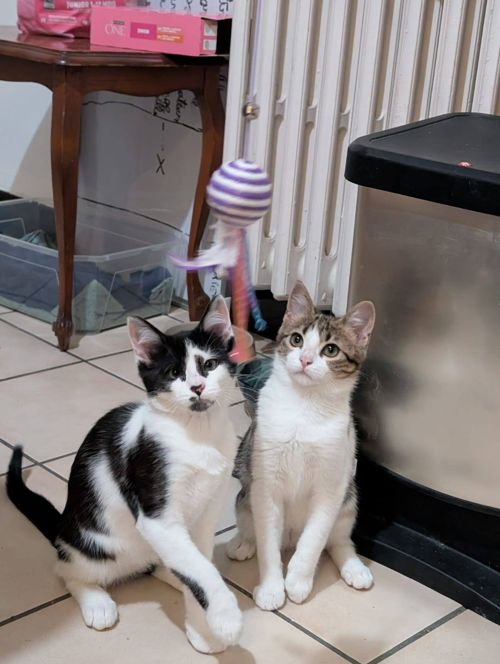
❌ Fermer cette fiche ❌
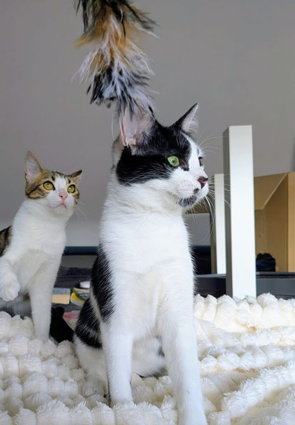
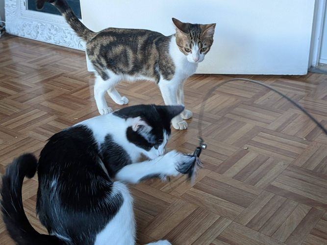
😻 Jazzy et Chatouille à l'adoption 🥰
Adoption double privilégiée !
Jazzy (la noire et blanche) et Chatouille ont mis tellement de temps à se rapprocher de l'humain. 🥹 Aujourd'hui, du haut de leurs 7 mois, nos 2 frangines sont prêtes pour le grand départ avec une famille d'adoption qui devra se montrer douce et patiente.
😽 Elles sont très joueuses et quand c'est le bon moment pour elles, très câlines. Elles sont propres et très sociales congénères. Elles ne connaissent pas les chiens. Elles adorent les enfants. ❤️
💛💚💙 N'hésitez surtout pas à venir les rencontrer! ❤️
🌍 À rencontrer à Gap (05).
Adoption à 230€. Possibilité d'échelonner le paiement.
Elles sont :
- ☑️ Identifiées par jazzy électronique
- ☑️ Déparasitées
- ☑️ Stérilisées
- ☑️ Testées FIV/FELV négatif
- ☑️ Vaccinées (rappel dans un an)
- ☑️ Certifiées en bonne santé par un vétérinaire
Le certificat d'engagement et de connaissance, délivré par nos soins, doit être lu et signé. Vous pouvez consulter ce document en cliquant ici.
Pour nous contacter à son sujet, utilisez la page dédiée de notre site, section "je souhaite adopter un chat". Précisez que c'est Jazzy et Chatouille qui vous intéressent et donnez-nous un maximum de détails sur l'accueil que vous leur offririez. Nous reviendrons vers vous dès que possible !
Lionne ♀
8 mois
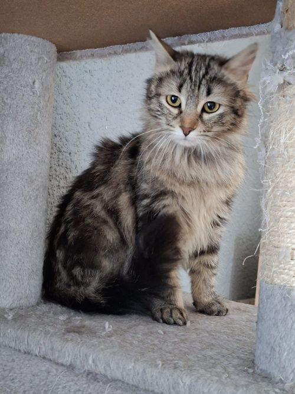
❌ Fermer cette fiche ❌
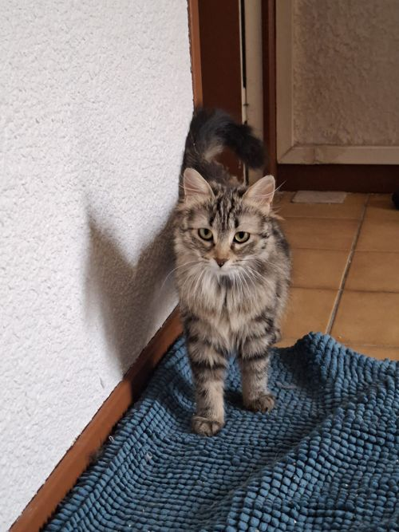
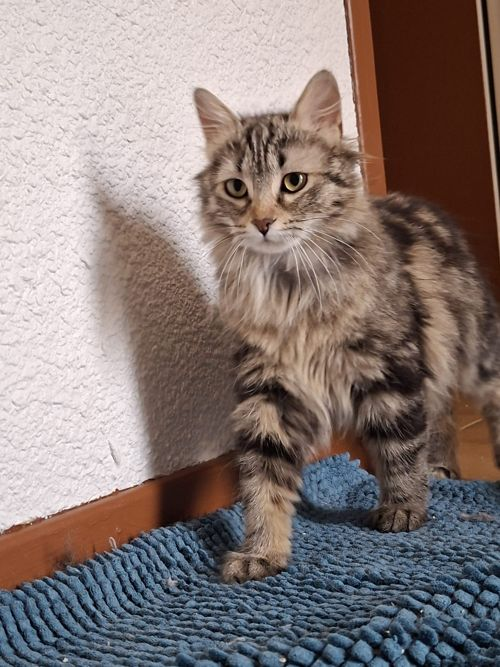
🐾 Lionne à l'adoption 🐾
Trouvée à Sigoyer en février comme beaucoup de nos ados, Lionne va enfin mieux et peut passer à l’adoption !
Petite minette douce et gentille de 8 mois, Lionne est un peu timide au début mais devient vite très câline une fois en confiance. Elle adore les caresses et ronronne très facilement. 🥰
🌍 À rencontrer à Saint-Bonnet en Champsaur (05).
Adoption à 230€. Possibilité d'échelonner le paiement.
Lionne est :
- ☑️ Identifiée par lionne électronique
- ☑️ Déparasitée
- ☑️ Stérilisée
- ☑️ Testée FIV/FELV négatif
- ☑️ Vaccinée (rappel dans un an)
- ☑️ Certifiée en bonne santé par un vétérinaire
Le certificat d'engagement et de connaissance, délivré par nos soins, doit être lu et signé. Vous pouvez consulter ce document en cliquant ici.
Pour nous contacter à son sujet, utilisez la page dédiée de notre site, section "je souhaite adopter un chat". Précisez que c'est Lionne qui vous intéresse et donnez-nous un maximum de détails sur l'accueil que vous lui offririez. Nous reviendrons vers vous dès que possible !
Maxou ♂
10 mois
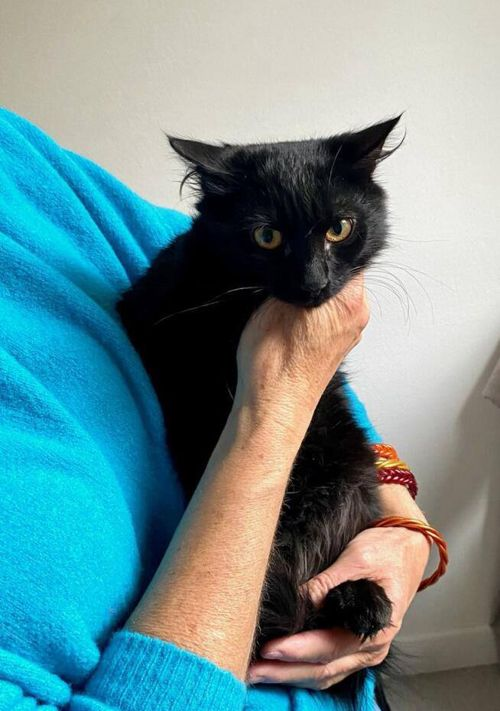
❌ Fermer cette fiche ❌
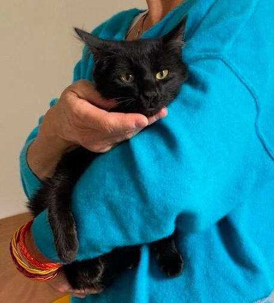
🐈⬛🐈⬛ Maxou à l'adoption !
Ce grand bonhomme de dix mois est à la recherche de sa famille 🥰
Issu de la rue et récupéré il y a peu de temps, il est encore un peu craintif et va avoir besoin d'humains calmes, tout doux et patients... Des adoptants Bisounours ! 😁
Il se laisse caresser et porter à bras mais il va lui& falloir encore un peu de temps pour bien s'acclimater et s'habituer pleinement aux humains.
Si son profil vous touche, n'hésitez pas à aller le rencontrer et à vous laisser séduire par sa petite bouille ♥️
🌎 À rencontrer à l'Argentière-La-Bessée (05).
Adoption à 230€.
Maxou est :
- ☑️ Identifié par puce électronique
- ☑️ Déparasité
- ☑️ Stérilisé
- ☑️ Primo-vacciné
Le certificat d'engagement et de connaissance, délivré par nos soins, doit être lu et signé. Vous pouvez consulter ce document en cliquant ici.
Pour nous contacter à leur sujet, utilisez la page dédiée de notre site, section "je souhaite adopter un chat". Précisez que c'est Maxou qui vous intéresse et donnez-nous un maximum de détails sur l'accueil que vous lui offririez. Nous reviendrons vers vous dès que possible !
Mirage ♂
8 mois
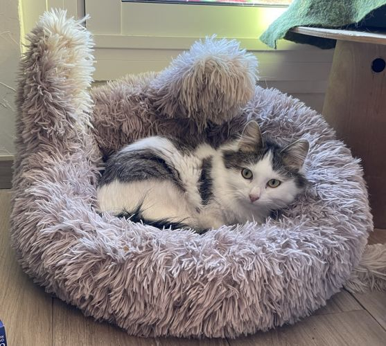
❌ Fermer cette fiche ❌
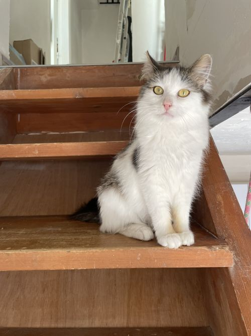
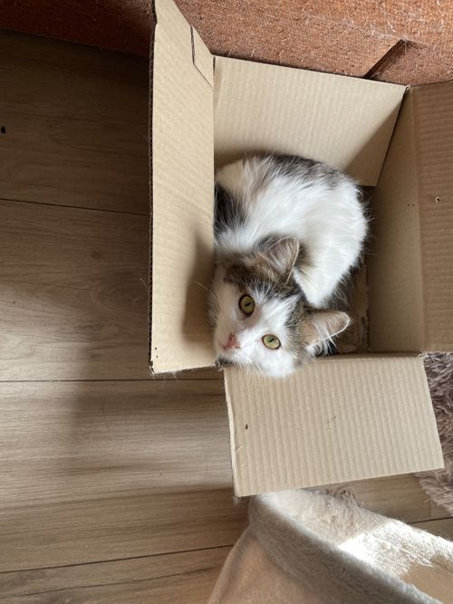
🐾 Mirage à l'adoption 🐾
Aujourd’hui, nous vous proposons le beau Mirage à l’adoption !
Mirage, jeune mâle de 8 mois, est un chat timide mais qui aime par dessus tout les gratouilles du menton. Ses passions dans la vie ? Faire une sieste au soleil, regarder les hirondelles par la fenêtre, et jouer avec les copains.
Ils s‘agit d’un chat très gentil, acceptant facilement les soins, et très joueur. Rien de tel qu’une balle qui fait bling-bling pour le ravir ! Un environnement stimulant avec un copain chat aimant jouer serait un plus pour lui. Une adoption double avec un autre chat de l’association est aussi une option pouvant lui convenir.
🌍 À rencontrer à Briançon (05).
Adoption à 230€. Possibilité d'échelonner le paiement.
Mirage est :
- ☑️ Identifié par puce électronique
- ☑️ Déparasité
- ☑️ Stérilisé
- ☑️ Testé FIV/FELV négatif
- ☑️ Vacciné (rappel dans un an)
- ☑️ Certifié en bonne santé par un vétérinaire
Le certificat d'engagement et de connaissance, délivré par nos soins, doit être lu et signé. Vous pouvez consulter ce document en cliquant ici.
Pour nous contacter à son sujet, utilisez la page dédiée de notre site, section "je souhaite adopter un chat". Précisez que c'est Mirage qui vous intéresse et donnez-nous un maximum de détails sur l'accueil que vous lui offririez. Nous reviendrons vers vous dès que possible !
Miss Terre ♀
9 ans
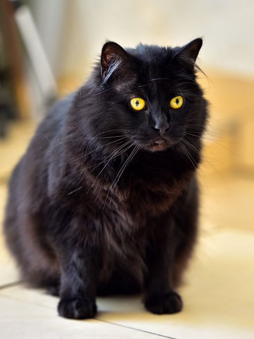
❌ Fermer cette fiche ❌
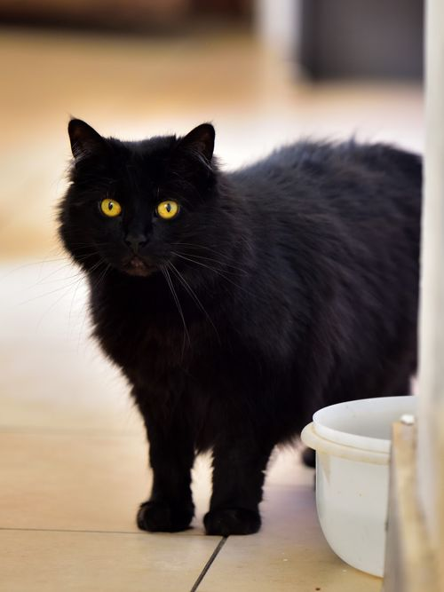
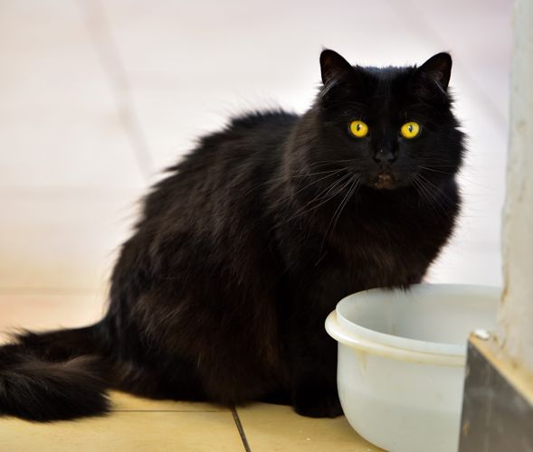
🐾🐈⬛ Miss Terre à l'adoption
Miss Terre est une chatte d’environ 9 ans, très propre et calme.
Récupérée errante et apeurée dans les rues de Gap, elle a depuis quelques semaines intégrée l'association et nous espérons lui trouver prochainement une chouette famille 🥰
Miss Terre a besoin d'un temps d'adaptation lorsqu'elle rencontre une nouvelle personne mais ensuite, elle se montre être très attachante et câline.
Cette minette partage actuellement le quotidien d'un chien et tout va bien, disons qu'elle ne s'en préoccupe pas le moins du monde 😅
Miss Terre aura besoin d'un foyer calme et aimant.
Nous pensons que Miss Terre est stérilisée mais nous demanderons à sa future famille de la surveiller de près sur les mois à venir afin de s'assurer qu'elle ne déclenche pas ses chaleurs. Si cela devait arriver, l'association prendra la stérilisation à sa charge.
🌍 À rencontrer sur Chorges (05).
Adoption à 230€ avec possibilité de régler en plusieurs fois.
Miss Terre est :
- ☑️ Identifiée par puce électronique
- ☑️ Déparasitée
- ☑️ Stérilisée ==> à surveiller
- ☑️ Vaccinée (rappel dans un an)
- ☑️ Certifiée en bonne santé par un vétérinaire
Le certificat d'engagement et de connaissance, délivré par nos soins, doit être lu et signé. Vous pouvez consulter ce document en cliquant ici.
Pour nous contacter à son sujet, utilisez la page dédiée de notre site, section "je souhaite adopter un chat". Précisez que c'est Miss Terre qui vous intéresse et donnez-nous un maximum de détails sur l'accueil que vous lui offririez. Nous reviendrons vers vous dès que possible !
Noisette ♀
8 ans
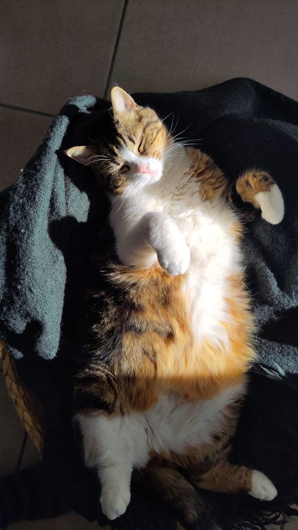
❌ Fermer cette fiche ❌
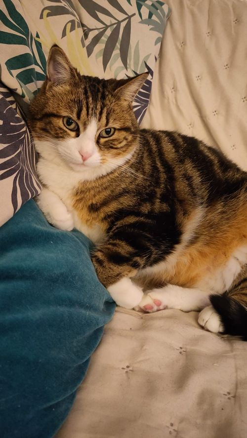
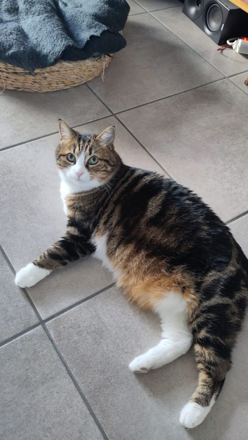
🐾 Noisette à l'adoption 🐾
Aujourd’hui, nous vous proposons la jolie Noisette à l’adoption !
Noisette est une femelle de 8 ans très gentille, décrite par sa famille d’accueil comme étant « curieuse, attachante et qui adore la compagnie ». Elle aime prendre son temps pour découvrir les nouveaux humains, mais une fois qu’elle vous accepte, vous devenez son meilleur ami ! Elle connaît l’extérieur mais n’est pas très demandeuse de sortir. Noisette conviendrait à merveille à un couple sans enfants (ou dont les enfants sont partis du nid familial).
🌍 À rencontrer à Embrun (05).
Adoption à 230€. Possibilité d'échelonner le paiement.
Noisette est :
- ☑️ Identifiée par puce électronique
- ☑️ Déparasitée
- ☑️ Stérilisée
- ☑️ Testée FIV/FELV négatif
- ☑️ Vaccinée (rappel dans un an)
- ☑️ Certifiée en bonne santé par un vétérinaire
Le certificat d'engagement et de connaissance, délivré par nos soins, doit être lu et signé. Vous pouvez consulter ce document en cliquant ici.
Pour nous contacter à son sujet, utilisez la page dédiée de notre site, section "je souhaite adopter un chat". Précisez que c'est Noisette qui vous intéresse et donnez-nous un maximum de détails sur l'accueil que vous lui offririez. Nous reviendrons vers vous dès que possible !
Plume ♀
5 ans
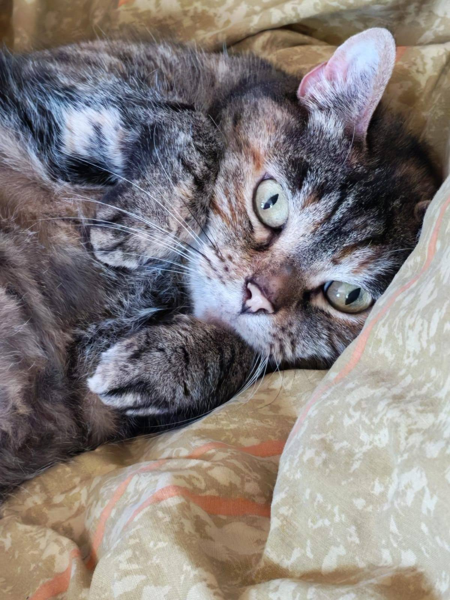
❌ Fermer cette fiche ❌
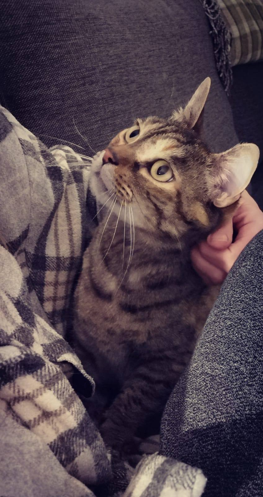
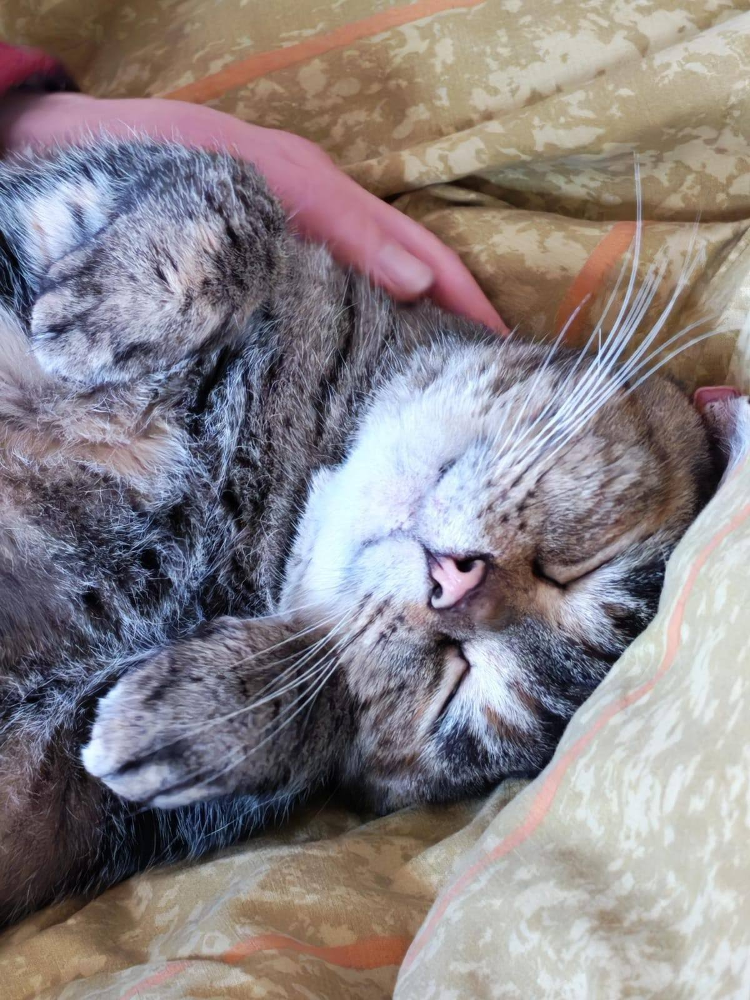
⛄️🐈 Plume à l'adoption
Une petite chatte d'environ 5 ans, habillée d'une belle robe marron et noire. Plutôt discrète et craintive, elle s'habitue cependant rapidement à l'humain.
Elle a beaucoup d'amour à revendre, elle demande constamment des caresses. Mais ne se laisse pas porter, c'est bien mieux de se poser sur les genoux de son humain.
Famille idéale : présente et calme, qui ne se déplace pas beaucoup. Il peut y avoir la présence d'un autre chat sympa avec ses congénères si la famille n'est pas présente en journée. Elle connaît les chiens.
Plume peut être un peu craintive face à un chat qui en impose, elle sera bien plus à l'aise avec un minou qui accepte de prendre le temps nécessaire pour faire connaissance en douceur.
Sa particularité : ses petites pattes et son ronronnement qui roucoule.
💛💚💙 N'hésitez surtout pas à venir la rencontrer...
🌎 À rencontrer sur Abriès-Ristolas (05).
Adoption à 230€ avec possibilité de régler en plusieurs fois.
Plume est :
- ☑️ Identifiée par puce électronique
- ☑️ Déparasitée
- ☑️ Stérilisée
- ☑️ Testé FIV positive/FELV négative
- ☑️ Vaccinée (rappel dans un an)
- ☑️ Certifiée en bonne santé par un vétérinaire
Le certificat d'engagement et de connaissance, délivré par nos soins, doit être lu et signé. Vous pouvez consulter ce document en cliquant ici.
Pour nous contacter à son sujet, utilisez la page dédiée de notre site, section "je souhaite adopter un chat". Précisez que c'est Plume qui vous intéresse et donnez-nous un maximum de détails sur l'accueil que vous lui offririez. Nous reviendrons vers vous dès que possible !
Poème ♀
9 mois
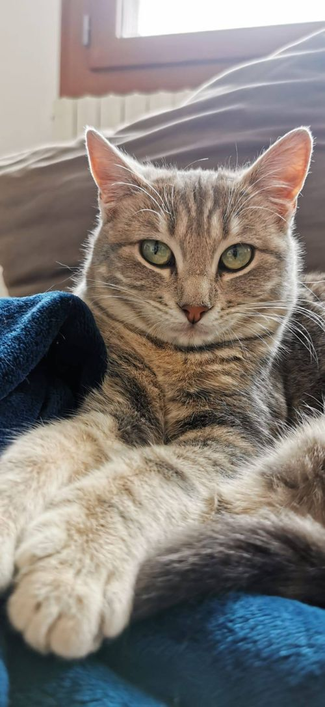
❌ Fermer cette fiche ❌
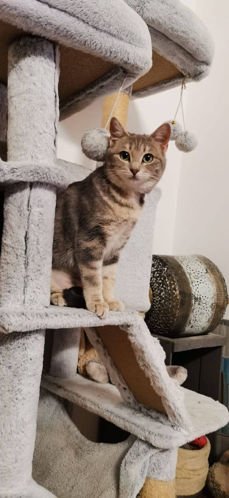
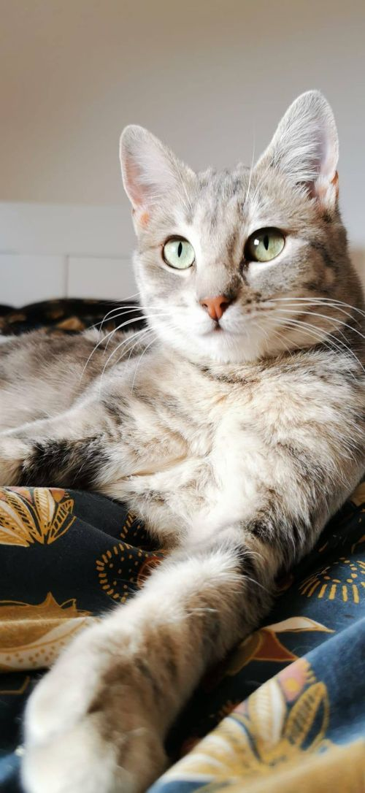
🐾 À l'adoption – Poème, petite âme sensible en quête de douceur 🐾
Poème est une jeune chatte d’environ 9 mois, trouvée sur une ferme dont les propriétaires sont devenus sa famille d'accueil. Elle vient de l’extérieur, et cela se ressent : Poème est une grande sensible, encore impressionnée par les gestes brusques et les bruits forts.
Une fois qu'elle se sentira en sécurité, elle révèlera tout son potentiel de câlins et d’amour 💛
Pour créer un lien de confiance avec elle, vous pourrez vous adonner à de grandes parties de jeux car si sa douceur nous a inspiré son prénom, Poème est aussi une grande joueuse experte en course poursuite et maîtrise de balle.
Poème aura besoin d'une famille qui puisse comprendre ses besoins de tranquillité et respecter ses moments de calme et surtout, qui fasse preuve de patience car, malgré plusieurs mois dans sa famille d'accueil, Poème est toujours vigilante lorsqu'un humain passe à côté d'elle.
Nous cherchons pour elle un foyer patient et bienveillant, prêt à lui laisser le temps de s’ouvrir. En échange, elle offrira un amour immense et sincère. Lorsqu'elle est posée, elle accepte volontiers et avec ronronnements une petite séance câlins si l'approche est faite en douceur.
🌎 À rencontrer à St Bonnet en Champsaur (05).
Adoption à 230€ avec possibilité de régler en plusieurs fois.
Poème est :
- ☑️ Identifiée par puce électronique
- ☑️ Déparasitée
- ☑️ Stérilisée
- ☑️ Testé FIV/FELV négative
- ☑️ Vaccinée (rappel dans un an)
- ☑️ Certifiée en bonne santé par un vétérinaire
Le certificat d'engagement et de connaissance, délivré par nos soins, doit être lu et signé. Vous pouvez consulter ce document en cliquant ici.
Pour nous contacter à son sujet, utilisez la page dédiée de notre site, section "je souhaite adopter un chat". Précisez que c'est Poème qui vous intéresse et donnez-nous un maximum de détails sur l'accueil que vous lui offririez. Nous reviendrons vers vous dès que possible !
Puce ♂
6 mois
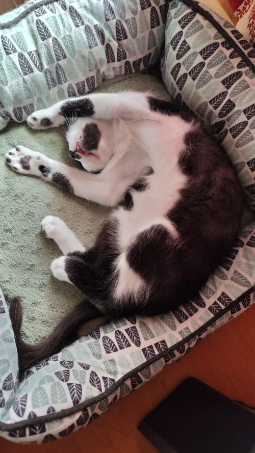
❌ Fermer cette fiche ❌
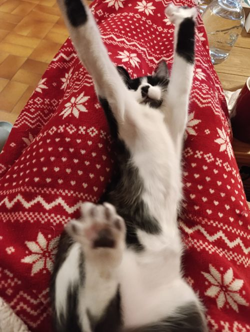
🐾 Puce à l'adoption 🐾
Aujourd’hui, nous vous proposons le jeune Puce à l’adoption !
Ce jeune chat de 6 mois est très espiègle et joueur, avec toujours une bêtise en tête ! Au premier abord, c’est un grand froussard, mais il se dévoile rapidement comme un chaton pot de colle et très proche de ses humains.
Toujours partant pour une partie de jeux, un copain chat serait idéal pour lui ! D’ailleurs, pourquoi ne pas envisager une adoption double avec l’un de ses copains actuels, qui ont le même âge que lui et avec qui il s’entend très bien ?
Drôle de particularité pour ce chaton, suite à un retard de croissance lié à son état de santé étant petit, il s’agit d’un format « mini » ! Il a vraiment tout pour nous faire craquer…
🌍 À rencontrer à Guillestre (05).
Adoption à 230€. Possibilité d'échelonner le paiement.
Puce est :
- ☑️ Identifié par puce électronique
- ☑️ Déparasité
- ☑️ Stérilisé
- ☑️ Testé FIV/FELV négatif
- ☑️ Vacciné (rappel dans un an)
- ☑️ Certifié en bonne santé par un vétérinaire
Le certificat d'engagement et de connaissance, délivré par nos soins, doit être lu et signé. Vous pouvez consulter ce document en cliquant ici.
Pour nous contacter à son sujet, utilisez la page dédiée de notre site, section "je souhaite adopter un chat". Précisez que c'est Puce qui vous intéresse et donnez-nous un maximum de détails sur l'accueil que vous lui offririez. Nous reviendrons vers vous dès que possible !
Punku ♀
1 an
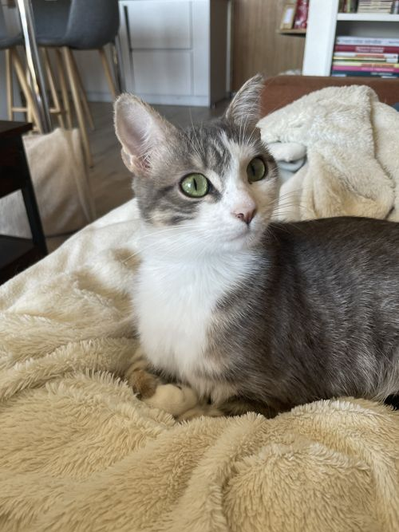
❌ Fermer cette fiche ❌
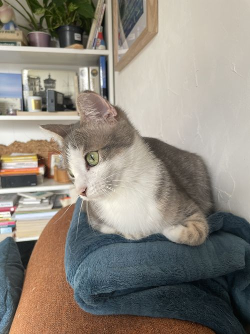
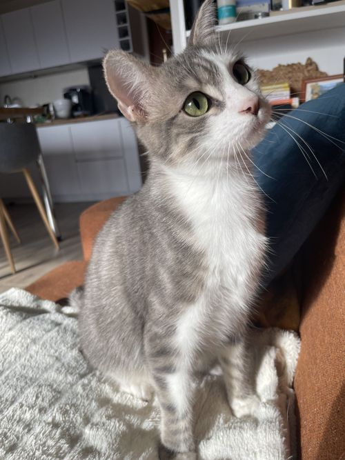
🐾 Punku à l'adoption 🐾
Aujourd’hui, nous vous proposons la belle Punku à l’adoption !
Cette jolie chatte de 1 an est à la recherche de sa famille pour la vie !
Très timide, il lui faudra du temps pour accorder sa confiance. En revanche, une fois cela fait, c’est parti pour les ronronnements et les papouilles, elle adore ça !
Elle aime également beaucoup jouer avec ses copains chats, observer les hirondelles, et faire la sieste au soleil.
Nous cherchons pour elle une famille douce et patiente, qui saura lui laisser le temps de s’adapter à ce changement de vie.
🌍 À rencontrer à Briançon (05).
Adoption à 230€. Possibilité d'échelonner le paiement.
Punku est :
- ☑️ Identifiée par puce électronique
- ☑️ Déparasitée
- ☑️ Stérilisée
- ☑️ Testée FIV/FELV négatif
- ☑️ Vaccinée (rappel dans un an)
- ☑️ Certifiée en bonne santé par un vétérinaire
Le certificat d'engagement et de connaissance, délivré par nos soins, doit être lu et signé. Vous pouvez consulter ce document en cliquant ici.
Pour nous contacter à son sujet, utilisez la page dédiée de notre site, section "je souhaite adopter un chat". Précisez que c'est Punku qui vous intéresse et donnez-nous un maximum de détails sur l'accueil que vous lui offririez. Nous reviendrons vers vous dès que possible !
Sushi ♀
8 mois
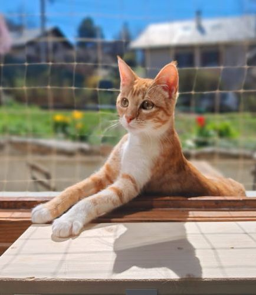
❌ Fermer cette fiche ❌
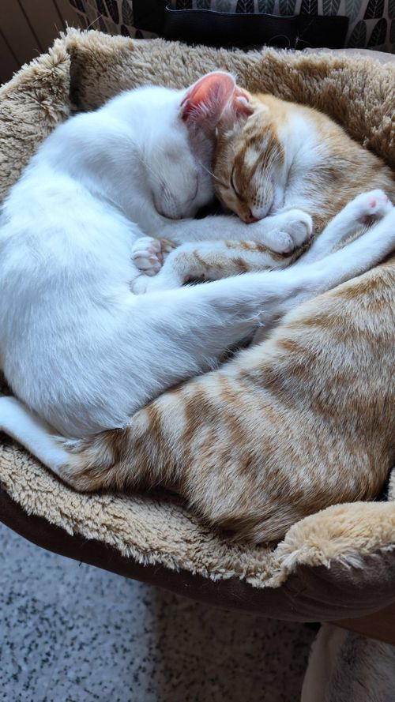
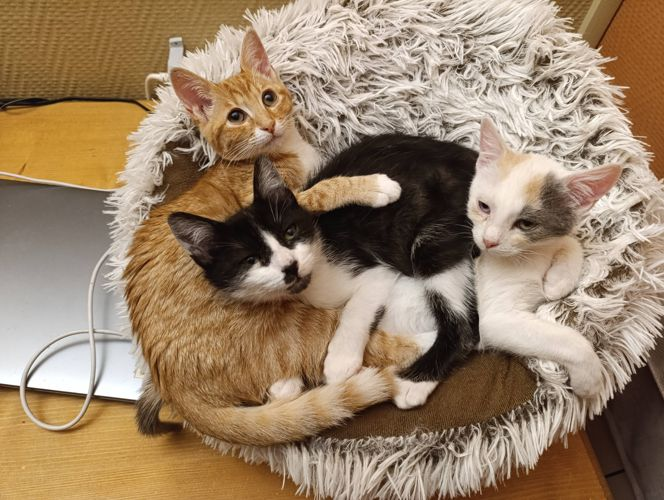
🐾 Sushi cherche sa famille 🐾
Nous vous présentons Sushi 🐱, une petite perle que nous choyons depuis plusieurs mois puisqu'elle est arrivée dans l'association en septembre 2025, à seulement quelques jours de vie.
Sushi a donc été biberonnée 🍼 avec ses frères et sœurs, mais son chemin a été semé d'embûches.
Sushi a un retard de croissance important, elle fait à ce jour 2 kilos du haut de ses 7 mois.
La santé de cette jolie demoiselle est ce qu'on pourrait qualifier de fragile, et elle va avoir besoin de toute l'attention possible dans sa future famille pour la vie. Adopter Sushi, c'est de la vigilance et des frais vétérinaires à la clé.
😷 Petit tour d'horizon sur la santé de Sushi :
- - retard de croissance
- - constipation
- - cystite potentiellement chronique
C'est sur ce point que la vigilance va devoir être importante. Les cystites de Sushi ne sont jusqu'à présent pas bactériennes. Elle doit notamment pour cette pathologie avoir un régime bien particulier; croquettes médicalisées et alimentation humide médicalisée. L'alimentation humide va également venir agir sur la problématique constipation. Sushi est également régulièrement sous laxatif pour réussir à faire des selles. Vous l'aurez compris, les futures adoptants de la miss vont devoir porter une vigilance accrue à ce qu'ils trouvent dans sa litière.
🐈 Pour toutes ses raisons, nous proposerons d'abord un contrat de famille d'accueil avant de basculer sur une adoption pour essayer de stabiliser au mieux sa santé. Il faudra donc prévoir quelques allers retours chez nos vétérinaires, son alimentation médicalisée sera elle prise en charge par l'association (ainsi que les frais vétérinaires) tant que l'adoption n'aura pas été effectuée.
Sushi vit actuellement avec d'autres grands chatons de son âge et serait ravie de se voir adopter avec un copain ou une copine ! ♥️
Au delà de ça, Sushi est une chatonne idéale : bien dans ses pattes, qui adore les humains et passer du temps perchée sur leurs épaules, un peu espiègle et rigolote; elle est surtout trèèèèès attachante. 🥰
🌍 À rencontrer à Guillestre (05).
Adoption à 230€. Possibilité d'échelonner le paiement.
Sushi est :
- ☑️ Identifiée par sushi électronique
- ☑️ Déparasitée
- ☑️ Stérilisée
- ☑️ Testée FIV/FELV négatif
- ☑️ Vaccinée (rappel dans un an)
- ☑️ Certifiée en bonne santé par un vétérinaire
Le certificat d'engagement et de connaissance, délivré par nos soins, doit être lu et signé. Vous pouvez consulter ce document en cliquant ici.
Pour nous contacter à son sujet, utilisez la page dédiée de notre site, section "je souhaite adopter un chat". Précisez que c'est Sushi qui vous intéresse et donnez-nous un maximum de détails sur l'accueil que vous lui offririez. Nous reviendrons vers vous dès que possible !
Timmy ♂
10 mois
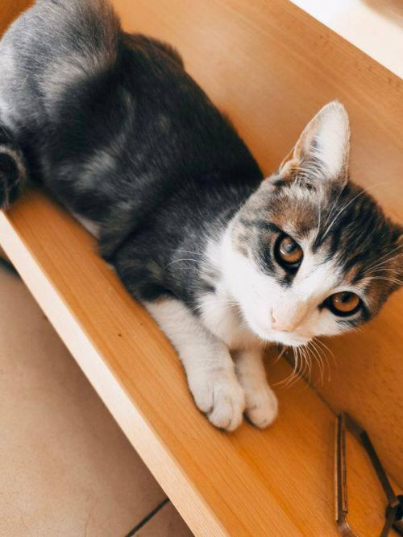
❌ Fermer cette fiche ❌
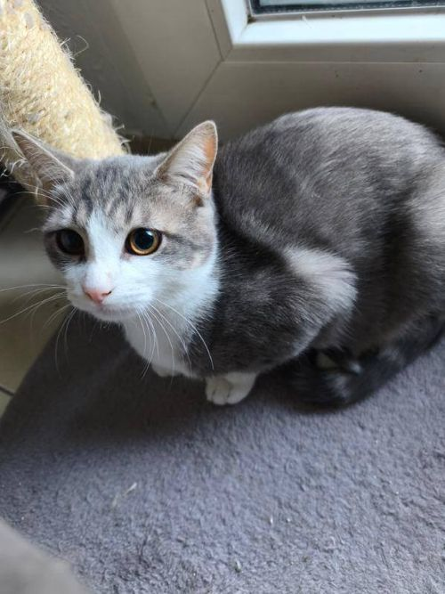
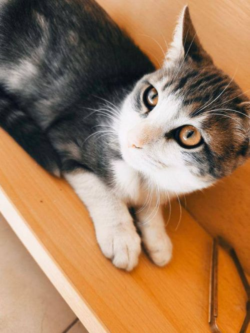
🐈⬛🍂 Timmy à l'adoption !!! 🍁
Aujourd'hui, nous vous proposons Timmy à l'adoption. Ce jeune matou d'environ 6 mois a été récupéré sur le tard. Il était errant et n'a pas été épargné par la rue. Il a une cicatrice à l'œil.
💙💚💛 Malgré le travail formidable de sa famille d'accueil, il reste timide. Il aura besoin d'une famille d'adoption calme et patiente, qui prendra le temps de gagner sa confiance. Cependant, Timmy progresse de jours en jours, il ronronne beaucoup dès qu'il est câliné et se plaît à dormir avec les humains de sa famille d'accueil 🐈⬛
Timmy est propre, pourra vivre en appartement et appréciera la compagnie d'un copain bien dans ses pattes qui l'aidera à prendre confiance. Il est ok chiens, chats, furets ! 🥰
🌎 À rencontrer sur Gap (05).
Adoption à 180€.
Timmy est :
- ☑️ Identifié par puce électronique
- ☑️ Déparasité
- ☑️ Stérilisé
- ☑️ Testé FIV/FELV négatif
- ☑️ Vacciné (rappel dans un an)
- ☑️ Certifié en bonne santé par un vétérinaire
Le certificat d'engagement et de connaissance, délivré par nos soins, doit être lu et signé. Vous pouvez consulter ce document en cliquant ici.
Pour nous contacter à son sujet, utilisez la page dédiée de notre site, section "je souhaite adopter un chat". Précisez que c'est Timmy qui vous intéresse et donnez-nous un maximum de détails sur l'accueil que vous lui offririez. Nous reviendrons vers vous dès que possible !
White ♂
7 mois
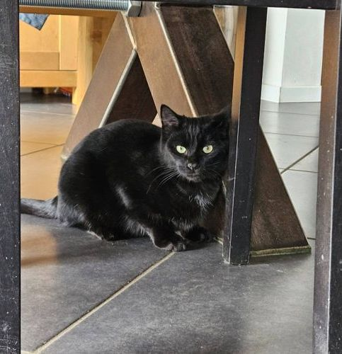
❌ Fermer cette fiche ❌
🐈⬛ White à l'adoption 🖤
Notre grand timide est enfin prêt pour rencontrer sa famille pour la vie. À un détail près... vous ne pourrez vraiment faire sa connaissance qu'après plusieurs visites ! 😬😅
Du haut de ses 7 mois, ce magnifique loulou aura besoin de bien connaître son humain pour délivrer tout ses ronrons et ses câlins (preuves par vidéos qu'ils existent vraiment même si vous ne le voyez pas et que vous aurez des tonnes de câlins une fois qu'il vous fera confiance et vous aura lui même adopté 😂😂😂).
En dehors de ça, c'est un bonhomme en pleine forme, bien dans ses pattes, gourmand et joueur. Il est ok congénères, ok chiens et ok enfants (pas trop jeunes et capable de patience et de respect). Il est propre et adore les câlins du soir. Un copain proche des humains serait un vrai plus pour soutenir ses progrès et l'aider à se rassurer au début.
💛💚💙 N'hésitez surtout pas à venir le rencontrer... ou au moins sa famille d'accueil qui vous dira plein de belles choses sur lui. ❤️
🌍 À rencontrer à Saint-Julien en Champsaur (05).
Adoption à 230€. Possibilité d'échelonner le paiement.
White est :
- ☑️ Identifié par white électronique
- ☑️ Déparasité
- ☑️ Stérilisé
- ☑️ Testé FIV/FELV négatif
- ☑️ Vacciné (rappel dans un an)
- ☑️ Certifié en bonne santé par un vétérinaire
Le certificat d'engagement et de connaissance, délivré par nos soins, doit être lu et signé. Vous pouvez consulter ce document en cliquant ici.
Pour nous contacter à son sujet, utilisez la page dédiée de notre site, section "je souhaite adopter un chat". Précisez que c'est White qui vous intéresse et donnez-nous un maximum de détails sur l'accueil que vous lui offririez. Nous reviendrons vers vous dès que possible !